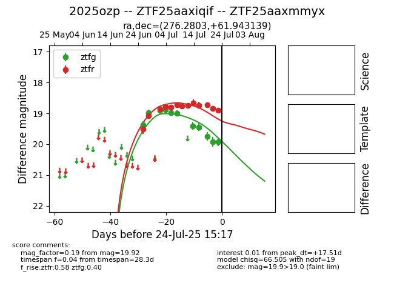

Target 2025ozp at 2025-07-24 15:17, see:
FINK: fink-portal.org/2025ozp
Lasair: lasair-ztf.lsst.ac.uk/objects/2025ozp
ALeRCE: alerce.online/object/2025ozp
TNS: wis-tns.org/object/2025ozp
YSE: ziggy.ucolick.org/yse/transient_detail/2025ozp
alt names
ZTF25aaxiqif (ztf)
ZTF25aaxmmyx (fink)
2025ozp (tns,yse)
coordinates:
equatorial (ra, dec) = (276.2803,+61.94314)
galactic (l, b) = (91.3763,+26.76674)
photometry
last ztfg=19.92, ztfr=18.90
11 ztfg, 13 ztfr detections
